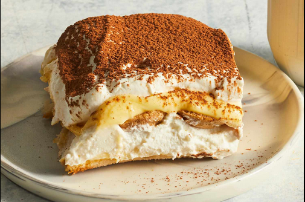

Description 1 (everyone loves a, every home needs a etc etc)
Description 2 (heres what you need to enjoy etc
Ingredients
- 6 large egg yolk
- 3/4 cup white sugar
- 2/3 cup milk
- 1 1/4 cups heavy cream
- 1/2 teaspoon vanilla extract
- 1 pound mascarpone cheese, at room temperature
- 1/4 cup strong brewed coffee, at room temperature
- 2 tablespoons rum
- 2 (3 ounce) packages ladyfinger cookies
- 1 tablespoon unsweetened cocoa powder
Directions
Step 1
- Whisk together egg yolks and sugar in a medium saucepan until well blended. Whisk in milk and cook over medium heat, stirring constantly, until mixture comes to a boil.
Step 2
- Boil gently for 1 minute, then remove from the heat and allow to cool slightly.
Step 3
- Cover tightly and chill in the refrigerator for 1 hour.
Step 4
- Beat cream and vanilla in a medium bowl with an electric mixer until stiff peaks form.
Step 5
- Remove egg yolk mixture from the refrigerator; add mascarpone cheese and whisk until smooth.
Step 6
- Combine coffee and rum in a small bowl. Split ladyfingers in half lengthwise and drizzle with the coffee mixture.
Step 7
- Arrange 1/2 of the soaked ladyfingers in the bottom of a 7x11-inch dish. Spread 1/2 of the mascarpone mixture over the ladyfingers, then spread 1/2 of the whipped cream over top. Repeat layers once more. Sprinkle cocoa powder over top.
Step 8
- Cover and refrigerate until set, 4 to 6 hours
Step 9
- Enjoy!! :)
Return to top
Return to main page